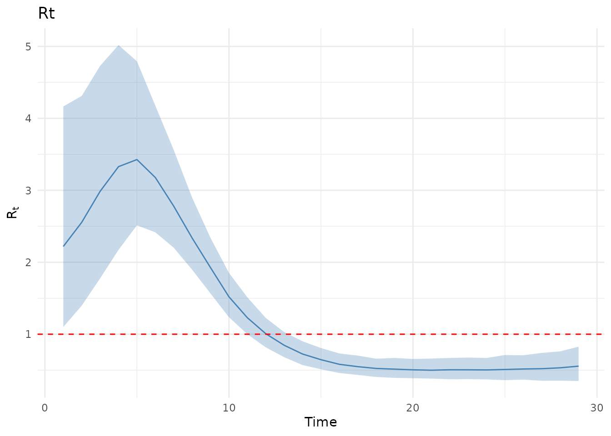
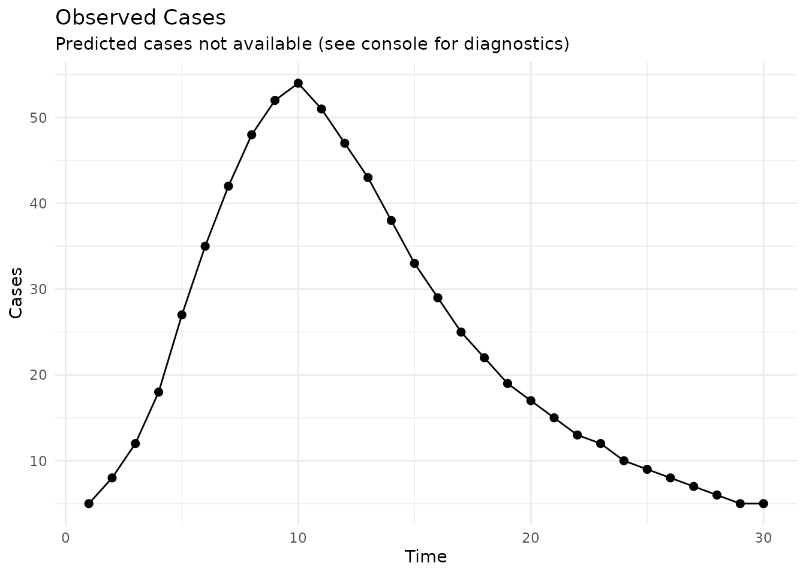

vignettes/EpiAwareR.Rmd
EpiAwareR.RmdEpiAwareR is an R interface to the Julia-based EpiAware compositional infectious disease modelling framework. It enables you to build flexible epidemiological models by composing reusable components rather than writing monolithic models from scratch.
Instead of implementing complete models, you combine three types of components:
┌─────────────────┐
│ Latent Model │ How Rt evolves over time
│ (e.g., AR, MA) │ (random walk, autoregressive, etc.)
└────────┬────────┘
│
↓
┌─────────────────┐
│ Infection Model │ How infections are generated
│ (e.g., Renewal) │ (renewal equation, SIR, etc.)
└────────┬────────┘
│
↓
┌─────────────────┐
│ Observation │ How infections become data
│ Model (e.g., NB)│ (negative binomial, delays, etc.)
└─────────────────┘This “LEGO-like” approach allows you to:
Install EpiAwareR from GitHub:
# Install devtools if needed
if (!requireNamespace("devtools", quietly = TRUE)) {
install.packages("devtools")
}
# Install EpiAwareR
devtools::install_github("sbfnk/EpiAwareR")EpiAwareR uses Julia for high-performance computation. On first use:
library(EpiAwareR)
# Automatically install Julia and EpiAware (if needed)
epiaware_setup_julia()This will:
EpiAwareR expects a data frame with:
y_t,
cases, confirm, or counts
date
# Example: Simulated outbreak data
set.seed(42)
dates <- seq.Date(as.Date("2024-01-01"), by = "day", length.out = 30)
# Simple epidemic curve
cases <- c(
5, 8, 12, 18, 27, 35, 42, 48, 52, 54,
51, 47, 43, 38, 33, 29, 25, 22, 19, 17,
15, 13, 12, 10, 9, 8, 7, 6, 5, 5
)
outbreak_data <- data.frame(
date = dates,
y_t = cases
)
head(outbreak_data)
#> date y_t
#> 1 2024-01-01 5
#> 2 2024-01-02 8
#> 3 2024-01-03 12
#> 4 2024-01-04 18
#> 5 2024-01-05 27
#> 6 2024-01-06 35Latent Model: How does change over time?
# AR(1) process: Rt depends on its previous value
ar1 <- AR(
order = 1,
damp_priors = list(truncnorm(0.5, 0.2, 0, 1)), # Autocorrelation
init_priors = list(norm(0, 0.5)), # Initial log(Rt)
std_prior = halfnorm(0.2) # Variability
)
#> Julia version 1.11.8 at location /opt/hostedtoolcache/julia/1.11.8/x64/bin will be used.
#> Loading setup script for JuliaCall...
#> Finish loading setup script for JuliaCall.
#> EpiAware Julia backend loaded successfully
print(ar1)
#> <EpiAware AR(1) Latent Model>
#> Damping priors: 1
#> Init priors: 1
#> Innovation std prior: specifiedInfection Model: How are infections generated?
# Renewal equation with generation time
renewal <- Renewal(
gen_distribution = gamma_dist(5, 1), # Mean 5 days
initialisation_prior = norm(log(10), 1)
)
print(renewal)
#> <EpiAware Renewal Infection Model>
#> Generation distribution: Gamma
#> Initialisation prior: specifiedObservation Model: How do infections become observed cases?
# Negative binomial accounts for overdispersion
negbin <- NegativeBinomialError(
cluster_factor_prior = halfnorm(0.3)
)
print(negbin)
#> <EpiAware Negative Binomial Observation Model>
#> Cluster factor prior: truncated(Normal(0, sd), 0, Inf)Combine components into a complete epidemiological model:
model <- EpiProblem(
epi_model = renewal,
latent_model = ar1,
observation_model = negbin,
tspan = c(1, 30) # Days 1-30
)
print(model)
#> <EpiAware Epidemiological Model>
#> Time span: 1 to 30
#> Components:
#> - Infection model: epiaware_renewal
#> - Latent model: epiaware_ar
#> - Observation model: epiaware_negbinUse Bayesian MCMC to estimate parameters:
results <- fit(
model = model,
data = outbreak_data,
method = nuts_sampler(
warmup = 500,
draws = 500,
chains = 2
)
)
#> Generating Turing.jl model...
#> Running NUTS sampling...
#> Chains: 2
#> Warmup: 500
#> Draws: 500
#> Running Pathfinder initialization...
#> Pathfinder initialization failed, using default initialization...
#> Processing results...
# Print summary
print(results)
#> <EpiAware Model Fit>
#>
#> Model:
#> Time span: 1 to 30
#> Infection model: epiaware_renewal
#> Latent model: epiaware_ar
#> Observation model: epiaware_negbin
#>
#> Sampling:
#> Method: NUTS
#> Chains: 2
#> Draws: 500 (per chain)
#>
#> Convergence:
#> Max Rhat: 1.008
#> Min ESS (bulk): 325
#>
#> Use summary() for parameter estimates
#> Use plot() to visualize results
# Detailed parameter estimates
summary(results)
#> # A tibble: 46 × 10
#> variable mean median sd mad q5 q95 rhat ess_bulk ess_tail
#> <chr> <dbl> <dbl> <dbl> <dbl> <dbl> <dbl> <dbl> <dbl> <dbl>
#> 1 latent.ar_i… 0.645 0.654 0.440 0.449 -0.112 1.37 0.999 790. 723.
#> 2 latent.damp… 0.917 0.925 0.0504 0.0493 0.825 0.987 1.01 559. 453.
#> 3 latent.std 0.214 0.208 0.0471 0.0432 0.148 0.297 1.00 698. 660.
#> 4 latent.ϵ_t.… 0.753 0.760 0.847 0.883 -0.608 2.16 1.000 1514. 618.
#> 5 latent.ϵ_t.… 0.920 0.916 0.904 0.872 -0.647 2.39 1.000 1158. 607.
#> 6 latent.ϵ_t.… 1.06 1.02 0.857 0.907 -0.288 2.49 0.999 1514. 955.
#> 7 latent.ϵ_t.… 0.966 0.949 0.864 0.872 -0.445 2.37 0.999 1527. 744.
#> 8 latent.ϵ_t.… 0.541 0.551 0.843 0.837 -0.864 1.92 1.00 1376. 843.
#> 9 latent.ϵ_t.… 0.135 0.168 0.787 0.831 -1.18 1.35 1.000 1167. 725.
#> 10 latent.ϵ_t.… -0.212 -0.213 0.798 0.795 -1.56 1.06 1.00 1223. 948.
#> # ℹ 36 more rows
# Visualize
plot(results, type = "Rt")
plot(results, type = "cases")
The power of compositional modelling: easily test different assumptions!
# Try a random walk instead of AR(1)
rw <- AR(
order = 1,
damp_priors = list(truncnorm(1.0, 0.01, 0.99, 1)), # Near 1 = random walk
init_priors = list(norm(0, 0.5)),
std_prior = halfnorm(0.1)
)
model_rw <- EpiProblem(
epi_model = renewal,
latent_model = rw, # Swapped!
observation_model = negbin,
tspan = c(1, 30)
)
results_rw <- fit(model_rw, data = outbreak_data)
# Account for reporting delay
delayed_obs <- LatentDelay(
model = negbin,
delay_distribution = lognorm(log(2), 0.5) # ~2 day delay
)
model_delayed <- EpiProblem(
epi_model = renewal,
latent_model = ar1,
observation_model = delayed_obs, # Swapped!
tspan = c(1, 30)
)
results_delayed <- fit(model_delayed, data = outbreak_data)For Julia features not yet wrapped in R, use
epiaware_call():
# Create HierarchicalNormal error model
eps_model <- epiaware_call("HierarchicalNormal", halfnorm(0.1))
# Create MA(2) latent model
ma2 <- epiaware_call(
"MA",
theta_priors = list(norm(0, 0.1), norm(0, 0.1)),
eps_t = eps_model,
.param_map = c(theta_priors = "θ_priors", eps_t = "ϵ_t")
)
# Use in EpiProblem like any other component
model_ma <- EpiProblem(
epi_model = renewal,
latent_model = ma2,
observation_model = negbin,
tspan = c(1, 30)
)The .param_map argument handles Greek letters in Julia
parameter names.
EpiAwareR provides convenient functions for specifying priors:
# Normal distribution
norm(mean = 0, sd = 1)
# Truncated normal (bounded)
truncnorm(mean = 0.5, sd = 0.2, lower = 0, upper = 1)
# Half-normal (positive values)
halfnorm(sd = 0.1)
# Gamma distribution
gamma_dist(shape = 5, scale = 1)
# Log-normal distribution
lognorm(meanlog = 0, sdlog = 0.5)
# Exponential distribution
exponential(rate = 0.1)Each component type has specific classes:
AR(), or
epiaware_call("MA", ...), etc.Renewal(), or
epiaware_call("SIR", ...), etc.NegativeBinomialError(),
LatentDelay(), etc.Explore more advanced usage:
epiaware_call()
?AR,
?Renewal, ?fit, etc.
sessionInfo()
#> R version 4.5.2 (2025-10-31)
#> Platform: x86_64-pc-linux-gnu
#> Running under: Ubuntu 24.04.3 LTS
#>
#> Matrix products: default
#> BLAS: /usr/lib/x86_64-linux-gnu/openblas-pthread/libblas.so.3
#> LAPACK: /usr/lib/x86_64-linux-gnu/openblas-pthread/libopenblasp-r0.3.26.so; LAPACK version 3.12.0
#>
#> locale:
#> [1] LC_CTYPE=C.UTF-8 LC_NUMERIC=C
#> [3] LC_TIME=C.UTF-8 LC_COLLATE=C.UTF-8
#> [5] LC_MONETARY=C.UTF-8 LC_MESSAGES=C.UTF-8
#> [7] LC_PAPER=C.UTF-8 LC_NAME=C.UTF-8
#> [9] LC_ADDRESS=C.UTF-8 LC_TELEPHONE=C.UTF-8
#> [11] LC_MEASUREMENT=C.UTF-8 LC_IDENTIFICATION=C.UTF-8
#>
#> time zone: UTC
#> tzcode source: system (glibc)
#>
#> attached base packages:
#> [1] stats graphics grDevices utils datasets methods base
#>
#> other attached packages:
#> [1] EpiAwareR_0.1.0.9000
#>
#> loaded via a namespace (and not attached):
#> [1] gtable_0.3.6 jsonlite_2.0.0 dplyr_1.1.4
#> [4] compiler_4.5.2 tidyselect_1.2.1 Rcpp_1.1.1
#> [7] JuliaCall_0.17.6 jquerylib_0.1.4 scales_1.4.0
#> [10] systemfonts_1.3.1 textshaping_1.0.4 yaml_2.3.12
#> [13] fastmap_1.2.0 ggplot2_4.0.1 R6_2.6.1
#> [16] labeling_0.4.3 generics_0.1.4 distributional_0.6.0
#> [19] knitr_1.51 backports_1.5.0 checkmate_2.3.3
#> [22] tibble_3.3.1 desc_1.4.3 RColorBrewer_1.1-3
#> [25] bslib_0.9.0 pillar_1.11.1 posterior_1.6.1
#> [28] rlang_1.1.7 utf8_1.2.6 cachem_1.1.0
#> [31] xfun_0.56 S7_0.2.1 fs_1.6.6
#> [34] sass_0.4.10 cli_3.6.5 withr_3.0.2
#> [37] pkgdown_2.2.0 magrittr_2.0.4 digest_0.6.39
#> [40] grid_4.5.2 lifecycle_1.0.5 vctrs_0.7.1
#> [43] evaluate_1.0.5 glue_1.8.0 tensorA_0.36.2.1
#> [46] farver_2.1.2 ragg_1.5.0 abind_1.4-8
#> [49] rmarkdown_2.30 matrixStats_1.5.0 tools_4.5.2
#> [52] pkgconfig_2.0.3 htmltools_0.5.9